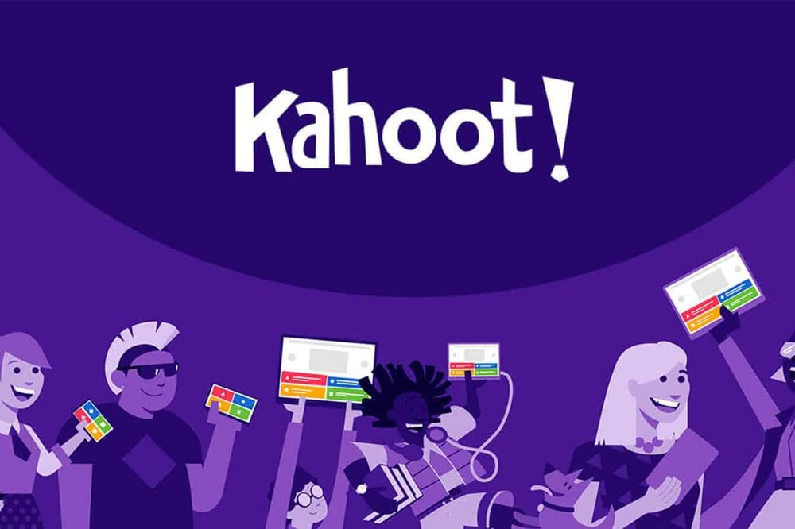

„Claude for Microsoft 365“ von Anthropic suchen, Hinzufügen
Seitenleiste öffnen, mit Claude-Konto anmelden
In jedem der drei Programme einmal starten
Merkt sich den Zusammenhang über alle drei Programme, eigene Skills gelten auch hier. In Word erscheinen Änderungen als Nachverfolgung.
ChatGPT-Add-in
Auch kostenlos
Office-Programm öffnen
Start → Add-Ins
„ChatGPT“ vom Anbieter OpenAI, LLC wählen, Hinzufügen
Mit ChatGPT-Konto anmelden
Chats getrennt von chatgpt.com, kein Gedächtnis, keine Skills. Vorsicht vor Fremd-Add-ins mit ähnlichem Namen.
Kein Office-Plugin: Google Docs nutzen
Google AI Pro / Workspace
Datei in Google Docs, Tabellen oder Präsentationen öffnen (Word-Dateien vorher in Google Drive hochladen)
Oben rechts auf „Frag Gemini“ ✦ klicken
Fertige Datei als Word, Excel oder PowerPoint herunterladen
In Google Docs arbeitet Gemini direkt im Dokument. Auch über einen Link zum Google-Dokument lässt sich im Gemini-Chat direkt mit dem Dokument arbeiten.
Datenschutz bei Plugins
Sobald die Seitenleiste offen ist, liest das Plugin die geöffnete Datei und schickt sie an den Anbieter. Also nie in Notenlisten, Gutachten oder anderen Dateien mit Schülerdaten öffnen. Wenn nötig: Kopie mit erfundenen Namen. Die Schul-IT kann Add-ins im Schulkonto sperren.
Skills und Projekte
Einmal sauber erklären, dauerhaft nutzen. Der Skill legt fest, wie gearbeitet wird. Das Projekt legt fest, wo und womit.
Skill: gespeicherte Arbeitsweise
Ein Prompt gilt nur im aktuellen Chat. Ein Skill ist gespeichert, und Claude nutzt ihn automatisch, sobald er passt. Unten gibt es meine Skills zum Herunterladen, jeweils auch als Masterprompt für jede andere KI.
Projekt: Arbeitsbereich zu einem Thema
Material, Anweisungen und alle Chats an einem Ort. Jeder neue Chat kennt den Hintergrund, z. B. ein Projekt pro Klasse.
Vorteile
Nichts neu erklären
Material griffbereit
Ordnung, je nach Konto teilbar
Nachteile
Gilt nur im Projekt
Bei viel Material gehen Details verloren
Material liegt beim Anbieter: keine Schülerdaten
Umzug zu einer anderen KI ist schwer
Meine Skills zum Herunterladen
Jeder Skill gibt es zweimal: als Skill-Paket (ZIP) für Claude und als Masterprompt (TXT) für jede KI.
So installierst du einen Skill in Claude
In den Claude-Einstellungen die Code-Ausführung und Dateierstellung einschalten
Anpassen → Skills öffnen
Auf „+“ → „Skill erstellen“ → „Skill hochladen“ klicken
Die heruntergeladene ZIP-Datei auswählen, nicht entpacken
Fertig: Einfach loslegen, z. B. „Erstelle eine Kann-Liste zu …“. Claude nutzt den Skill automatisch.
Hochgeladene Skills sind privat für dein Konto. Menünamen können je nach Version leicht abweichen.
Prompts als TXT-Datei weitergeben
Ein Masterprompt ist eine Textdatei mit allen Anweisungen. Das funktioniert in jeder KI, auch ohne Claude:
Neuen Chat öffnen, z. B. in ChatGPT, Gemini oder Copilot
TXT-Datei in den Chat ziehen
Dazu schreiben: „Bitte folge den Anweisungen in dieser Datei.“
Leicht zu teilen: per Teams, E-Mail oder über die Ablage unten
Eigene Prompts genauso speichern: Text in einen Editor, als .txt sichern
Dauerhaft speichern geht auch: in Gemini als Gem, in ChatGPT als eigenes GPT
Unterschied: Den Skill installiert man einmal, Claude nutzt ihn dann automatisch. Die TXT-Datei lädt man jedes Mal hoch, dafür klappt sie überall.
Gemini Notebook (früher NotebookLM)
Stark bei genauen Quellenangaben und Audio- oder Video-Zusammenfassungen. Eng mit Gemini verbunden, keine offizielle Verbindung zu Claude.
Datenschutz bei Skills und Prompts
Material, das du hochlädst, landet beim KI-Anbieter. Keine Schülerdaten, keine echten Namen, keine Noten.
Kahoot aus dem eigenen Material
Aus Arbeitsblatt, Lernsituation oder Kann-Liste wird ein spielbares Quiz. So geht es mit jeder der drei KIs.

Kahoot-Verbindung
Direkt ins Kahoot-Konto
In Claude unter Einstellungen → Konnektoren „Kahoot“ verbinden
Material anhängen: „Erstelle ein Kahoot mit 15 Fragen dazu“
Claude legt das Quiz in deinem Kahoot-Konto an
Ohne Verbindung: Der Skill „Kahoot-Vorlage“ (unten) erstellt eine Excel-Datei zum Importieren.
App „Kahoot Creator“
Direkt ins Kahoot-Konto
Neuen Chat starten, auf „+“ → „Mehr“ → „Kahoot Creator“ klicken
Material anhängen, z. B. „Mach daraus 10 Fragen“
Entwurf über den Button im Kahoot-Konto öffnen und fertigstellen
Bis zu 20 Fragen pro Anfrage, Entwurf im Chat weiter bearbeitbar.
Über die Excel-Vorlage
Keine Kahoot-Anbindung
Masterprompt „Kahoot-Vorlage“ (unten) und Material in Gemini hochladen
Gemini erstellt die Fragen als Excel-Datei (.xlsx)
In Kahoot: Hinzufügen → Importieren → Tabelle importieren
Importiert werden nur Quizfragen. Wahr/Falsch kommt als Quizfrage mit zwei Antworten an.
So kommt die Excel-Datei in Kahoot
In Kahoot auf Erstellen klicken
Links auf Hinzufügen → Importieren
Tabelle importieren wählen und die Datei „… (Import).xlsx“ hochladen
Fragen prüfen, ggf. Bilder ergänzen, speichern
Die Lösungsdatei mit Belegen bleibt bei dir und wird nicht importiert. Der Masterprompt funktioniert in jeder KI. Je nach Kahoot-Tarif hat Kahoot auch einen eigenen KI-Generator, z. B. aus einer PDF.
Praxisteil 1
Anwenden: Lernspaziergang
Aus Kann-Liste und Material entsteht eine Textdatei. Damit lernen die Schüler*innen im Sprachmodus jeder KI. Die KI fragt, statt zu erzählen. Zwei Varianten, je als Skill und als Masterprompt.
Live-Sprachmodus im Vergleich
StärkeSchwäche
Live-Sprachmodus von Claude, ChatGPT und Gemini im Vergleich
Für den Lernspaziergang: Jede App mit Sprachmodus funktioniert.
Warum das funktioniert
Bei der Sache: Die KI bleibt beim Material und der Kann-Liste
Echtes Lernen: Fragen statt Antworten zum Abschreiben
Niedrige Hürde: Sprechen statt Schreiben, gut bei Schreibschwierigkeiten oder Deutsch als Zweitsprache
Bewegung: Lernen beim Gehen, z. B. im Blücherpark
Grenzen
Die KI kann Fehler machen
Funktioniert nur, wenn Schüler*innen aktiv mitmachen
Gratis-Versionen: Sprachmodus begrenzt, besser 10–15 Minuten pro Runde planen
Vorher testen
Dieselbe TXT-Datei in ChatGPT, Gemini und Claude ausprobieren: Bleibt die KI in der Tutor-Rolle und stellt sie Fragen?
Praxisteil 2
Anwenden: Webanwendung erstellen
Aus Lernsituation, Übungsblättern und Kann-Liste entsteht eine interaktive Lern-App als eine einzige HTML-Datei. Die Schüler*innen öffnen sie im Browser, am iPad oder am Prowise-Display.
Was in der App steckt
Arbeitsplatz: Die Lernsituation als klickbares Postfach oder Kundenakte des Ausbildungsbetriebs
Erarbeitung & Training: alle Aufgaben in Originalreihenfolge, mit Tipps und Feedback; auf Wunsch Lernhilfen als „Übung“ und ein Abruf-Check
Handlungsprodukt: das Ausgangsproblem am Arbeitsplatz lösen
Selbstcheck: Kann-Liste in vier Farben, Druckbericht als PDF und ein Übungs-Prompt für den Lernspaziergang
Außerdem: Spickzettel, Vorlesen, Tafelmodus fürs Prowise-Display, läuft offline. Mit #lehrkraft am Ende der Adresse siehst du alle Lösungen.
Jede Aufgabe wird geprüft
Die KI analysiert jede Originalaufgabe und entscheidet begründet. Ein neues Format kommt nur, wenn es den Inhalt klar besser lernen lässt – nie wegen Abwechslung.
BeibehaltenDie Aufgabe ist gut: 1:1 digital, gleiche Items und Zahlen wie auf dem Blatt.
AnreichernIm Kern gut, aber z. B. ohne Begründung oder Feedback: Das wird ergänzt.
ErsetzenEin anderes Format ist klar besser. Inhalt, Fall, Zahlen und Operator bleiben.
Im Zweifel bleibt die Originalform. Die Lehrkraft hat das letzte Wort.
Die 7 kaufmännischen Kernformate
Diese Formate nutzt die App, wenn eine Aufgabe ersetzt oder angereichert wird.
K1Beleg- & Dokumenten-PrüferRechnung, Lieferschein, Vertrag prüfen
K2Prüfschema RechtVoraussetzung → Fall → Ergebnis
K3Rechen-Werkstattkalkulieren, buchen, Kennzahlen
K4Verwechslerz. B. Prokura oder Handlungsvollmacht?
Skill in Claude nutzen oder den Masterprompt in eine andere KI ziehen (in ChatGPT und Gemini am besten im Canvas-Modus)
Material hochladen: Lernsituation, alle Übungsblätter, Kann-Liste, gern auch Infotexte, Lösungen und Belege
Bis zu 4 Rückfragen beantworten, z. B. Klasse, Vorwissen, Bearbeitungszeit und ob Lernhilfen (Beispiele, Übungen, Abruf-Check) dazukommen sollen
Planung prüfen: Für jede Aufgabe steht, ob sie beibehalten, angereichert oder ersetzt wird und warum. Einzelnes ändern (z. B. „Aufgabe 4 beibehalten“), dann „passt“ schreiben
Die KI baut die App als eine HTML-Datei
Selbst durchspielen, dann an die Klasse geben
Wer es eilig hat, schreibt „direkt“. Dann kommt die Planung nur kurz und die App wird sofort gebaut.
Gut zu wissen
Läuft in jedem Browser, ohne Installation und ohne Konto
Fortschritt bleibt nur auf dem Gerät, keine Daten verlassen es
Inhalte, Nummerierung und Operatoren kommen aus deinem Material; ein neues Format senkt nie das Niveau
Am iPad läuft eine HTML-Datei aus Teams oder der Dateien-App oft nur als Vorschau ohne Funktionen: vorher auf einem Schülergerät testen oder als Link verteilen
Lösungen mit [PRÜFEN] unbedingt kontrollieren
Keine Schülerdaten in das Material
Claude, ChatGPT und Gemini im Vergleich
Gleiche Idee, andere Namen. Wähle eine KI, um ihre Spalte hervorzuheben.
StärkeSchwächeGleichwertig
Vergleich von Claude, ChatGPT und Gemini
Thema
Stand November 2026. Funktionen und Grenzen ändern sich häufig.
Auch ohne eigenes Abo: Angebote in NRW
Für alle, die nicht privat mit Claude oder ChatGPT arbeiten.
Kostenlos
AIS.chat
Ehemals telli. Datenschutzkonformer KI-Chat des Landes, für Berufskollegs kostenlos und dienstlich nutzbar.
Selbstlernkurs
Selbstlernkurs KI
Kurs des Schulministeriums: wie KI im Unterricht hilft und wo die Grenzen liegen.
Leitfaden
Handlungsleitfaden
„Umgang mit textgenerierenden KI-Systemen“ des MSB NRW, dazu Prompting-Karten auf lernen-digital.nrw.
Ablage: der gemeinsame Ordner
Material teilen und herunterladen, ohne Login. Alles landet im selben Ordner.
Hochladen
Dateien hierher ziehenoder klicken bzw. Enter drücken · bis 20 MB pro Datei · PDF, Office, Bilder, Text, Audio, Video
Bitte nur Unterrichtsmaterial hochladen, keine Dateien mit Schülerdaten.